24 图论模型¶
约 2126 个字 预计阅读时间 11 分钟
图的基本概念¶
图¶
图是一个有序二元组 \(G=(V,E)\)，其中 \(V\) 是顶点（vertex）集合，\(E\) 是边（edge）的集合。\(E\) 中每条边 \(e\) 与 \(V\) 中两个顶点关联（incident）。
- 若与边关联的两个顶点有序，则称图为有向图（digraph），否则称为无向图
度：无向图 \(G\) 中与顶点 \(v\) 关联的边的数目称为 \(v\) 的度，记为 \(d(v)\)(\(deg_G(v)\))
- 图的所有顶点的度的最大值与最小值分别称为最大度和最小度， 记为 \(\Delta(G)\) 和 \(\delta(G)\)
- （握手定理）所有顶点的度之和等于边数的两倍，即 \(\sum_{v\in V}d(v)=2|E|\)
简单图¶
两端点相同的边称为环（loop），两端点分别相同的多条边称为平行边（parallel edges）
既没有环，也没有平行边的图称为简单图（simple graph）。不是简单图的图称为多重图（multigraph）
完全图¶
任何两个不同顶点之间都有边相连的简单图称为完全图（complete graph）
- \(n\) 个顶点的完全图记为 \(K_n\)， \(K_n\)的边数为 \(\frac{n(n-1)}{2}\)
简单图的顶点数与边数¶
- 若 \(G=(V,E)\) 为简单图，则边数的上界为 \(\frac{|V|(|V|-1)}{2}\)，下界为 \(|V|-1\)
- 边数接近上界的称为稠密图（dense graph），边数远离上界的称为稀疏图（sparse graph）
二部图与连通¶
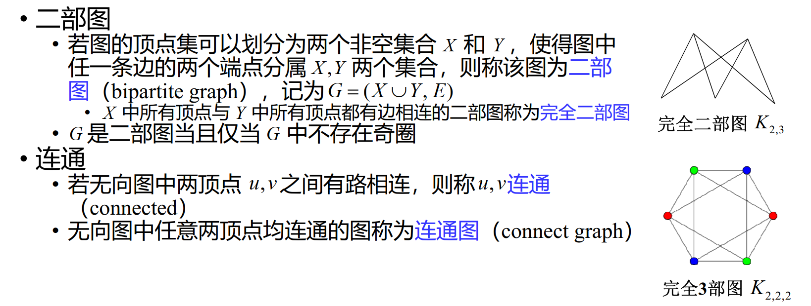
子图¶

路¶
顶点和边交替出现的序列 \(v_{i_0}e_{i_1}v_{i_1}e_{i_2}\cdots e_{i_k}v_{i_k}\)，且序列中与每条边相邻的两个顶点为该边的两个端点，称为连接顶点 \(v_{i_0}\) 和 \(v_{i_k}\) 的途径（walk）
- 若图为简单图，可省略途径中边的符号
经过边互不相同的途径称为迹（trail）
- 起点和终点相同的迹称为闭迹
经过顶点互不相同的途径称为路（path）
- 起点和终点相同，其余顶点互不相同，也不与起点和终点相同的途径称为圈（cycle）
路的长度¶
- 边赋权图中一条路所含边的权之和称为它的长度
树¶

最小生成树¶
最小生成树（MST）是赋权图所有生成树中总权和最少的生成树
Kruskal 算法¶

最短路¶

最短连接¶
给定Euclidean平面上 \(n\) 个点，如何用总长度最短的若干条线段将它们连接起来？
用最小生成树解决最短连接问题：构造 \(n\) 个顶点的赋权完全图 \(K_n\)，边的权为它的两个端点的Euclidean距离。问题的解即为 \(K_n\) 的最小生成树
最小 Steiner 树¶
允许增加任意多个Steiner点的最短连接（就是说，可以在原有的点集中增加任意多个点，使得最后的连接线段总长度最短）

Gilbert-Pollak猜想¶
最小Steiner树长度不小于最小生成树长度的 \(\frac{\sqrt{3}}{2}\)倍
\(n=3,4,5,6\) 时，猜想成立
Hamilton 圈 与 Hamilton 图¶
经过图的所有顶点恰好一次的圈称为 Hamilton圈（Hamiltion cycle）
存在Hamilton圈的图称为Hamilton图
Icosian game¶
一个正十二面体的二十个顶点各代表一个城市，是否有一条从某个城市出发，沿正十二面体的棱行走，经过每个城市恰好一次，最后回到出发城市的路线？
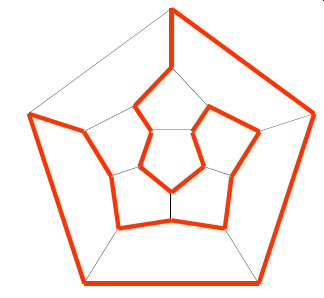
骑士环游 | Knight’s tour¶
在 \(8\times8\) 国际象棋棋盘上，马能否按其走子规则，从一个格子出发，经过其它格子恰好一次，最后回到起点？
- 构造“跳马图”，每一格子为图的一个顶点，两个格子之间有 边相连当且仅当马可按走子规则从一个格子跳到另一个格子

推广为 \(m\times n\) 棋盘上的骑士环游问题

特殊顶点集¶
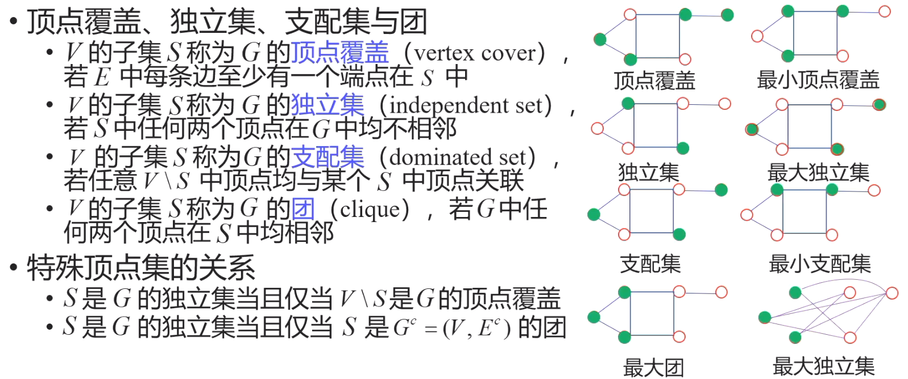
皇后问题¶

匹配（边集）¶
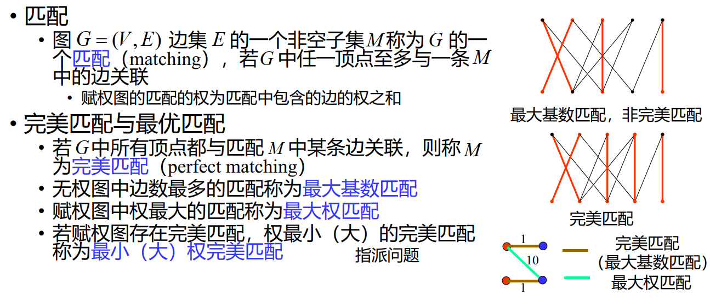
Hall 定理 与 Frobenius 定理¶


例如：

左图中，\(|S|=2 \leq 3=|N(S)|\)
右图中，\(|S|=2 \nleq 1=|N(S)|\)
因为二者 左右顶点数不同，所以不能完美匹配
Hall定理的等价定理¶

图的问题¶
选址问题¶
问题背景

无回环情况¶
口诀
道路无回环，
抓各端，
最小的进一站
- 若只有两站，应在产量多的麦田建站
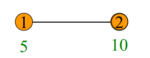

-
若①是各端产量最小者，②是①的邻点
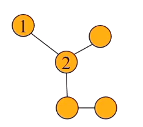 - 在①处或①②之间建场，不如在②处建场 - 若不在①处或①②之间建场， ①的麦子进入麦场必经过②

所以我们说“最小的进一站”，把①的麦子并入②的麦子
例子

有回环情况¶
口诀
道路有回环，每圈甩一段，
化为无回环，然后照样算。
甩法有不同，结果一一算，
算后再比较，最优可立断。
例如：
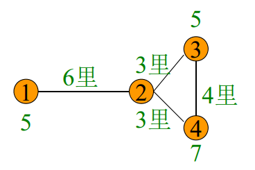
将圈甩为：

七桥问题¶
问题背景
在 Konigsberg 城，有七座桥梁建在 Pregel 河上，是否有一条从城中某处出发，经过每座桥梁恰好一次，最后回到出发点的路线？
Euler 图¶
经过图的所有边恰好一次的闭迹称为 Euler 回路（Eulerian circuit）。存在 Euler 回路的图为 Euler 图（Eulerian graph）。
一连通图是 Euler 图的充要条件是图中没有奇度顶点。
以河流分割而成的城市区域为顶点，桥梁为边，边的端点为该桥梁连接的两片区域。七桥问题等价于在该图中寻找一条闭迹。
可以证明，七桥问题无解。
中国邮递员问题（Chinese postman problem | CPP）¶
问题背景
一个投递员每次上班，要走遍他负责送信的段，然后回到邮局。问应该怎样走才能使所走的路程最短？
- 将邮递员走过的区域建模为赋权图。街道为边，街道交汇 处为顶点，边的权为街道的长度。
- 若赋权图是 Euler 图，任何一条 Euler 回路都是中国邮递员 问题的最优解。
- 若赋权图不是 Euler 图，寻找一条总长度最短的回路，该回 路可能经过某些边两次以上。
着色¶

Ramsey 数¶


（IMO 1964） 17 位科学家中每一位和其余 16 位通信，在他们的通信中所讨论的仅有三个问题，而任两位科学家通信时所讨论的是同一问题，证明至少有三位科学家通信时所讨论的是同一问题。
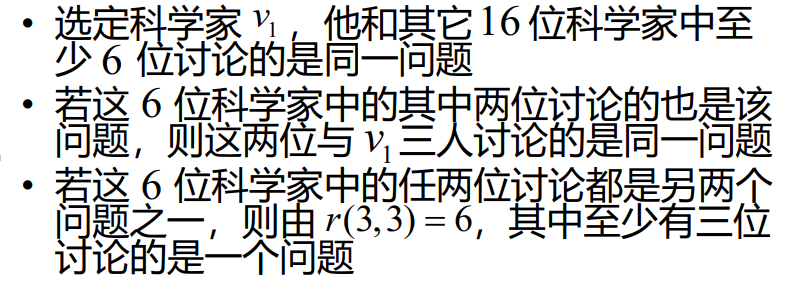
推广 Ramsey 数到三维，在这题就是 \(R(3,3,3)=17\)
割¶
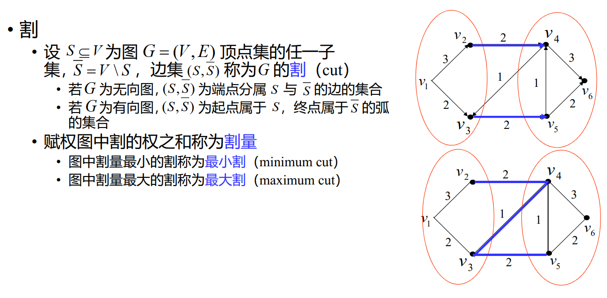
网络流¶


算法与复杂性¶

图的应用¶
搭档方法¶

获胜队伍¶
一个 \(2n\) 个队伍的循环赛持续了 \(2n-1\) 天，每天每个队伍都和另一个队伍比赛，每场比赛都有一个队伍获胜，一个队伍失败。在整个比赛中，每个队伍都和其他队伍比赛了一次。我们能不能在每天都选择一个获胜的队伍，而且每个队伍只能被选择一次？
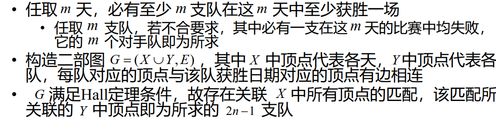
黑白异位¶
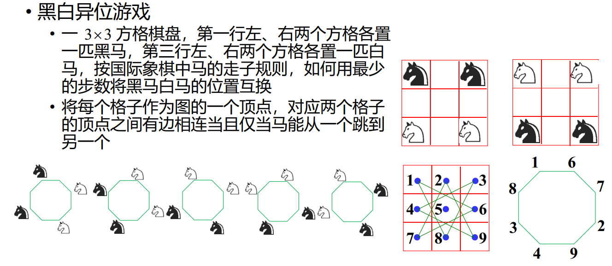
分水问题¶
现有A,B,C三个水瓶，其容积分别为12,8,5升。 A瓶装满水， B,C为空瓶。现欲利用B,C两瓶，将A瓶中的水均分，并使倾倒次数最少


好像是列出了所有的情况，然后找到最短的路径。从中间的 \((12,0,0)\) 到左边的 \((6,6,0)\)
代表问题¶
某校共有 \(m\) 个专业，为调研 \(n\) 门课程的教学情况，邀请部分同学参加座谈
- 每门课程有一名同学参加
- 各门课程邀请的学生各不相同
- 来自专业 \(i\) 的学生数不超过 \(a_i\)
可以用网络流解决
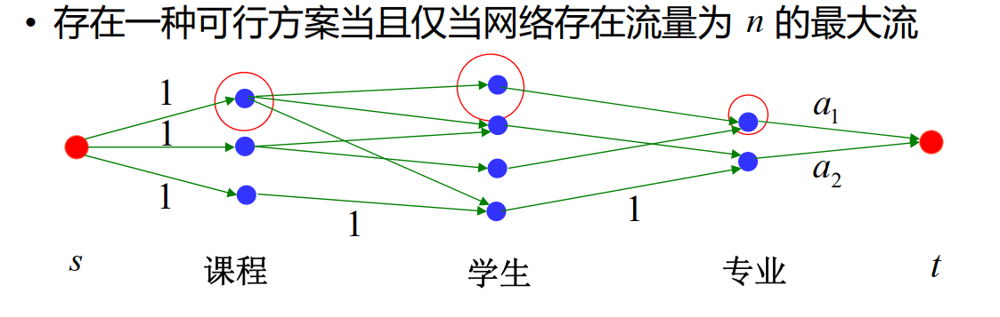
电缆与管道问题¶
中心配电房位于某幢建筑内，一些主干用户位于其 他不同的建筑内。为避免相互干扰，中心配电房与 每个主干用户需有一条专门的电缆相连
- 电缆需铺设在地下管道内，多条电缆可以共用一条 地下管道，有些建筑之间的道路可能不允许开挖管 道
- 铺设电缆的单位长度费用为 \(\gamma\) ，开挖管道的单位长 度费用为 \(\tau\)
- 寻找一种方案，使总费用尽可能少
对电缆来说是最短路问题，对管道来说是最小生成树问题

未来网络 · 寻路¶
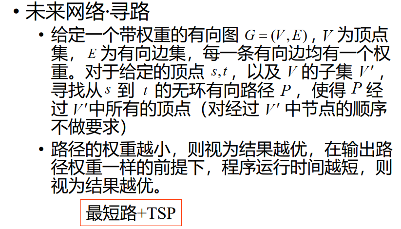